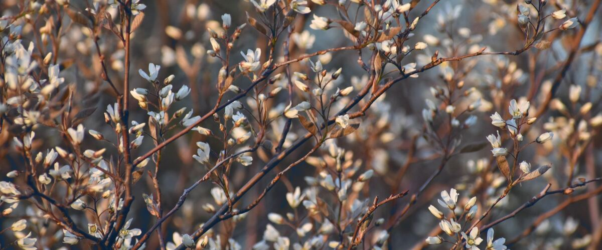

When to plant serviceberry in Oregon and Washington
In Portland: Plant serviceberry shrubs Mar 1 – Apr 26. In Bend: Apr 28 – Jun 23. Find your city below.
- Difficulty
- Easy
- Sun
- Full sun to part shade
- Spacing
- 6 to 10 feet apart
- Planting depth
- Same depth as in the pot or nursery
- Frost
- Hardy perennial; comes back every year
- First harvest
- First berries in two to four years
A native small tree or shrub (also called Saskatoon) with white spring flowers and blueberry-like fruit in early summer. Very cold-hardy, so it suits gardens on both sides of the Cascades.
Serviceberry planting dates
| City | Plant in the garden |
|---|---|
| Portland, OR | Mar 1 – Apr 26 |
| Seattle and Tacoma, WA | Mar 1 – Apr 26 |
| Eugene, OR | Mar 1 – Apr 26 |
| Spokane, WA | Apr 1 – May 27 |
| Bend and Redmond, OR | Apr 28 – Jun 23 |
| Tri-Cities (Pasco, Kennewick, Richland), WA | Mar 20 – May 15 |
Find your town
Portland area, OR 6 towns
| City | Plant in the garden |
|---|---|
| Gresham, OR | Mar 1 – Apr 26 |
| Hillsboro and Beaverton, OR | Mar 5 – Apr 30 |
| Oregon City and West Linn, OR | Mar 1 – Apr 26 |
| Portland, OR | Mar 1 – Apr 26 |
| St. Helens and Scappoose, OR | Mar 1 – Apr 26 |
| Wilsonville and Canby, OR | Mar 1 – Apr 26 |
Willamette Valley, OR 5 towns
| City | Plant in the garden |
|---|---|
| Corvallis and Albany, OR | Mar 1 – Apr 26 |
| Cottage Grove, OR | Mar 13 – May 8 |
| Eugene, OR | Mar 1 – Apr 26 |
| McMinnville and Newberg, OR | Mar 4 – Apr 29 |
| Salem, OR | Mar 1 – Apr 26 |
Southern Oregon, OR 4 towns
| City | Plant in the garden |
|---|---|
| Ashland and Talent, OR | Mar 25 – May 20 |
| Grants Pass, OR | Mar 1 – Apr 26 |
| Medford, OR | Mar 1 – Apr 26 |
| Roseburg, OR | Mar 1 – Apr 26 |
Oregon Coast, OR 5 towns
| City | Plant in the garden |
|---|---|
| Astoria, OR | Mar 25 – May 20 |
| Brookings and Gold Beach, OR | Mar 25 – May 20 |
| Coos Bay and North Bend, OR | Mar 25 – May 20 |
| Newport and Lincoln City, OR | Mar 25 – May 20 |
| Tillamook, OR | Mar 25 – May 20 |
Central Oregon and the high desert, OR 6 towns
| City | Plant in the garden |
|---|---|
| Bend and Redmond, OR | Apr 28 – Jun 23 |
| Burns, OR | Apr 30 – Jun 25 |
| Klamath Falls, OR | Apr 28 – Jun 23 |
| Lakeview, OR | Apr 23 – Jun 18 |
| Madras, OR | Apr 20 – Jun 15 |
| Prineville, OR | Apr 20 – Jun 15 |
Columbia Gorge and eastern Oregon, OR 9 towns
| City | Plant in the garden |
|---|---|
| Baker City, OR | Apr 20 – Jun 15 |
| Enterprise and Joseph, OR | Apr 20 – Jun 15 |
| Hermiston, OR | Mar 20 – May 15 |
| Hood River, OR | Mar 20 – May 15 |
| John Day, OR | Apr 20 – Jun 15 |
| La Grande, OR | Apr 1 – May 27 |
| Ontario, OR | Mar 20 – May 15 |
| Pendleton, OR | Mar 20 – May 15 |
| The Dalles, OR | Mar 20 – May 15 |
Seattle and Puget Sound, WA 6 towns
| City | Plant in the garden |
|---|---|
| Bremerton and Port Orchard, WA | Mar 1 – Apr 26 |
| Everett, WA | Mar 1 – Apr 26 |
| Kent, Renton and Auburn, WA | Mar 1 – Apr 26 |
| Olympia, WA | Mar 18 – May 13 |
| Seattle and Tacoma, WA | Mar 1 – Apr 26 |
| Shelton, WA | Mar 16 – May 11 |
North Sound and the islands, WA 5 towns
| City | Plant in the garden |
|---|---|
| Anacortes, WA | Mar 1 – Apr 26 |
| Bellingham, WA | Mar 1 – Apr 26 |
| Friday Harbor and the San Juans, WA | Mar 1 – Apr 26 |
| Mount Vernon and Burlington, WA | Mar 1 – Apr 26 |
| Oak Harbor and Whidbey Island, WA | Mar 1 – Apr 26 |
Olympic Peninsula and coast, WA 6 towns
| City | Plant in the garden |
|---|---|
| Aberdeen and Hoquiam, WA | Mar 25 – May 20 |
| Forks, WA | Mar 25 – May 20 |
| Long Beach and Ilwaco, WA | Mar 25 – May 20 |
| Port Angeles, WA | Mar 1 – Apr 26 |
| Port Townsend, WA | Mar 1 – Apr 26 |
| Sequim, WA | Mar 10 – May 5 |
Southwest Washington, WA 3 towns
| City | Plant in the garden |
|---|---|
| Centralia and Chehalis, WA | Mar 11 – May 6 |
| Longview and Kelso, WA | Mar 1 – Apr 26 |
| Vancouver, WA | Mar 1 – Apr 26 |
Wenatchee and the Okanogan, WA 5 towns
| City | Plant in the garden |
|---|---|
| Chelan, WA | Mar 20 – May 15 |
| Leavenworth, WA | Apr 1 – May 27 |
| Omak and Okanogan, WA | Apr 1 – May 27 |
| Wenatchee, WA | Mar 20 – May 15 |
| Winthrop and Twisp, WA | Apr 3 – May 29 |
Yakima Valley and Columbia Basin, WA 8 towns
| City | Plant in the garden |
|---|---|
| Ellensburg, WA | Apr 1 – May 27 |
| Ephrata and Quincy, WA | Mar 20 – May 15 |
| Goldendale, WA | Apr 7 – Jun 2 |
| Moses Lake, WA | Mar 20 – May 15 |
| Sunnyside, Grandview and Prosser, WA | Mar 20 – May 15 |
| Tri-Cities (Pasco, Kennewick, Richland), WA | Mar 20 – May 15 |
| Walla Walla, WA | Mar 20 – May 15 |
| Yakima, WA | Mar 27 – May 22 |
Spokane and eastern Washington, WA 3 towns
| City | Plant in the garden |
|---|---|
| Colville, WA | Apr 1 – May 27 |
| Pullman, WA | Apr 1 – May 27 |
| Spokane, WA | Apr 1 – May 27 |
How to grow serviceberry
- Pick a sunny spot with soil that drains well, and mix in an inch or two of compost.
- Plant serviceberry shrubs on your city's dates, 6 to 10 feet apart. Same depth as in the pot or nursery.
- Water through the first two summers. Prune out a few old stems in late winter to keep it productive, or train it to a single trunk as a small tree.
- Harvest: Pick in June or July when berries turn dark purple-blue and taste sweet. Net the shrub if you want to beat the birds.
Popular serviceberry varieties
Widely sold picks that do well somewhere in Oregon or Washington. The tag says which side of the mountains suits each one best.
Western serviceberry
Amelanchier alnifolia, also called saskatoon, bears white spring flowers and sweet, blueberry-like fruit. Very hardy and drought-tolerant, it grows wild on both sides of the Cascades.
Both sides
Regent
A compact, productive serviceberry that stays about 4 to 6 feet tall. Sweet, juicy berries and good fall color make it ideal for small gardens and hedges.
Both sides
Smoky
A widely grown fruiting selection with large, sweet, flavorful berries. Productive and very cold-hardy, it is a good choice for jam, pies and fresh eating.
Both sides
Northline
Large, sweet berries on a suckering, multi-stem shrub. It bears young and heavily and is one of the most popular saskatoon varieties for home fruit growers.
Both sides
Autumn Brilliance
A popular landscape serviceberry grown as a small tree, with white spring flowers and brilliant orange-red fall color. The fruit is edible, though birds usually get it first.
West side
Key numbers
- 2–4Years to fruit
- Self-fertilePollination
- June–JulyHarvest
- Very hardyCold hardiness
Growing notes
What makes the difference in Northwest gardens, in plain language.
Where it grows wild
Western serviceberry, also called Saskatoon, grows on both sides of the Cascades, from dry eastern slopes and canyons to open woods and forest edges in the west. It's a shrub or small tree with clouds of white flowers in spring, sweet purple-blue fruit in early summer, and orange to red fall color.
Because it handles cold winters and dry summers, it's one of the few fruiting natives that does well almost anywhere in the region. Regent is a compact selection, and Smoky is known for sweet fruit.
Planting, pruning and pests
Serviceberry adapts to most well-drained soils in full sun to part shade, with more fruit in sun. Water through the first two summers. In late winter, remove a few of the oldest stems and any suckers you don't want, or train one strong stem as a small tree.
Rust, leaf spot and pear slug (small, slimy larvae that skeletonize leaves) show up in some years. Most are minor, and good airflow helps.
Harvest and wildlife value
Berries ripen in June or July and taste like a cross between a blueberry and an almond-scented cherry. Pick when they're dark purple-blue and sweet. They're delicious fresh, in pies or frozen.
Birds love them, which makes serviceberry a great wildlife plant and a frustrating fruit plant. Net the shrub just before the berries color if you want a full harvest. The spring flowers feed native bees early in the season.
Common questions about growing serviceberry
What does serviceberry fruit taste like?
Sweet and mild, like a blueberry with a hint of almond from the small soft seeds. They're good fresh, baked into pies or made into jam.
Is serviceberry the same as Saskatoon?
Yes. Saskatoon is another common name for western serviceberry, Amelanchier alnifolia, the species native to the Northwest.
How do I keep birds from eating my serviceberries?
Cover the shrub with bird netting before the berries start to color. Smaller, compact varieties like Regent are easier to net.